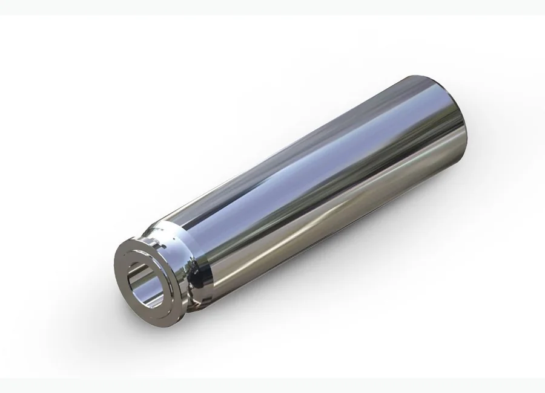
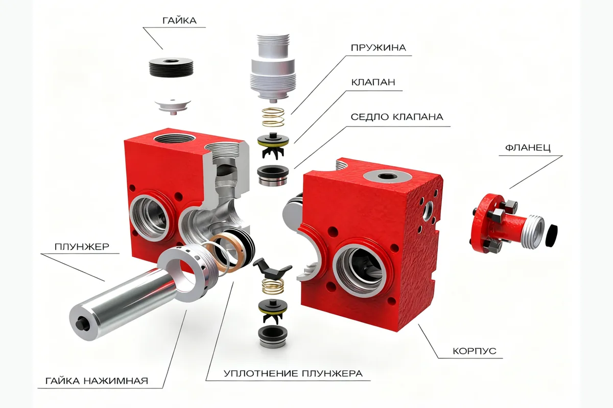

كيفية طلب عرض سعر
- أرسل رقم القطعة أو موديل المعدة.
- أرفق صورة المنتج أو الرسم الفني إن توفر.
- سنراجع المطابقة ونجهز تفاصيل العرض.
مضخات الطين وقطع الغيار
مضخات الطين وقطع الغيار. مضخة الطين مكبس لمشاريع صيانة واستبدال معدات حقول النفط. يمكن للمشتري إرسال رقم القطعة أو موديل المعدة أو صورة المنتج أو الرسم الفني لطلب عرض سعر.

مضخة الطين مكبس لمشاريع صيانة واستبدال معدات حقول النفط. يمكن للمشتري إرسال رقم القطعة أو موديل المعدة أو صورة المنتج أو الرسم الفني لطلب عرض سعر.
دعم مطابقة المواصفات وتغليف التصدير والتواصل عبر واتساب والبريد الإلكتروني لمشتري حقول النفط.
الوصف
الصور المخصصة لمواد الوصف تظهر هنا ولا تستخدم كصورة بطاقة المنتج.

مطابقة رقم القطعة
احتوت مواد المصدر على أرقام مرجعية، لكن أسماء الجدول الأصلي لم تكن موثوقة بما يكفي للنشر المباشر. تم الاحتفاظ بالأرقام للمطابقة وتأكيد عرض السعر.
أرسل رقم OEM أو موديل المضخة أو موديل الجهاز أو صورة المنتج أو الرسم الفني. ندعم مطابقة رقم القطعة ومطابقة الرسوم ومطابقة العينة لقطع غيار أجهزة الحفر ومضخات الطين والونشات والهيدروليك ومعدات رأس البئر.
| اسم القطعة / المكوّن | رقم مرجعي / كود موديل | المعدة المناسبة | ملاحظات |
|---|---|---|---|
| مضخة الطين مكبس - مكوّن | 1part104705 | مضخات الطين وقطع الغيار | رقم مرجعي محفوظ من المصدر. يجب تأكيده باستخدام موديل المعدة أو صورة المنتج أو الرسم الفني قبل عرض السعر. |
| مضخة الطين مكبس - مكوّن | 2P104716 | مضخات الطين وقطع الغيار | رقم مرجعي محفوظ من المصدر. يجب تأكيده باستخدام موديل المعدة أو صورة المنتج أو الرسم الفني قبل عرض السعر. |
| مضخة الطين مكبس - مكوّن | 2P103345 | مضخات الطين وقطع الغيار | رقم مرجعي محفوظ من المصدر. يجب تأكيده باستخدام موديل المعدة أو صورة المنتج أو الرسم الفني قبل عرض السعر. |
| مضخة الطين مكبس - مكوّن | 3P107525 | مضخات الطين وقطع الغيار | رقم مرجعي محفوظ من المصدر. يجب تأكيده باستخدام موديل المعدة أو صورة المنتج أو الرسم الفني قبل عرض السعر. |
| مضخة الطين مكبس - مكوّن | 3P107527 | مضخات الطين وقطع الغيار | رقم مرجعي محفوظ من المصدر. يجب تأكيده باستخدام موديل المعدة أو صورة المنتج أو الرسم الفني قبل عرض السعر. |
| مضخة الطين مكبس - مكوّن | P103572HP | مضخات الطين وقطع الغيار | رقم مرجعي محفوظ من المصدر. يجب تأكيده باستخدام موديل المعدة أو صورة المنتج أو الرسم الفني قبل عرض السعر. |
| مضخة الطين مكبس - مكوّن | P100332HP | مضخات الطين وقطع الغيار | رقم مرجعي محفوظ من المصدر. يجب تأكيده باستخدام موديل المعدة أو صورة المنتج أو الرسم الفني قبل عرض السعر. |
| مضخة الطين مكبس - مكوّن | P103571HP | مضخات الطين وقطع الغيار | رقم مرجعي محفوظ من المصدر. يجب تأكيده باستخدام موديل المعدة أو صورة المنتج أو الرسم الفني قبل عرض السعر. |
| مضخة الطين مكبس - مكوّن | P100331HP | مضخات الطين وقطع الغيار | رقم مرجعي محفوظ من المصدر. يجب تأكيده باستخدام موديل المعدة أو صورة المنتج أو الرسم الفني قبل عرض السعر. |
| مضخة الطين مكبس - مكوّن | 3P103522 | مضخات الطين وقطع الغيار | رقم مرجعي محفوظ من المصدر. يجب تأكيده باستخدام موديل المعدة أو صورة المنتج أو الرسم الفني قبل عرض السعر. |
| مضخة الطين مكبس - مكوّن | 3P103524 | مضخات الطين وقطع الغيار | رقم مرجعي محفوظ من المصدر. يجب تأكيده باستخدام موديل المعدة أو صورة المنتج أو الرسم الفني قبل عرض السعر. |
| مضخة الطين مكبس - مكوّن | 3P104707 | مضخات الطين وقطع الغيار | رقم مرجعي محفوظ من المصدر. يجب تأكيده باستخدام موديل المعدة أو صورة المنتج أو الرسم الفني قبل عرض السعر. |
| مضخة الطين مكبس - مكوّن | 3P104709 | مضخات الطين وقطع الغيار | رقم مرجعي محفوظ من المصدر. يجب تأكيده باستخدام موديل المعدة أو صورة المنتج أو الرسم الفني قبل عرض السعر. |
| مضخة الطين مكبس - مكوّن | P104736HP | مضخات الطين وقطع الغيار | رقم مرجعي محفوظ من المصدر. يجب تأكيده باستخدام موديل المعدة أو صورة المنتج أو الرسم الفني قبل عرض السعر. |
| مضخة الطين مكبس - مكوّن | P102093HP | مضخات الطين وقطع الغيار | رقم مرجعي محفوظ من المصدر. يجب تأكيده باستخدام موديل المعدة أو صورة المنتج أو الرسم الفني قبل عرض السعر. |
| مضخة الطين مكبس - مكوّن | 3P104710 | مضخات الطين وقطع الغيار | رقم مرجعي محفوظ من المصدر. يجب تأكيده باستخدام موديل المعدة أو صورة المنتج أو الرسم الفني قبل عرض السعر. |
| مضخة الطين مكبس - مكوّن | 2P104711 | مضخات الطين وقطع الغيار | رقم مرجعي محفوظ من المصدر. يجب تأكيده باستخدام موديل المعدة أو صورة المنتج أو الرسم الفني قبل عرض السعر. |
| مضخة الطين مكبس - مكوّن | P105095 | مضخات الطين وقطع الغيار | رقم مرجعي محفوظ من المصدر. يجب تأكيده باستخدام موديل المعدة أو صورة المنتج أو الرسم الفني قبل عرض السعر. |
| مضخة الطين مكبس - مكوّن | P109313 | مضخات الطين وقطع الغيار | رقم مرجعي محفوظ من المصدر. يجب تأكيده باستخدام موديل المعدة أو صورة المنتج أو الرسم الفني قبل عرض السعر. |
| مضخة الطين مكبس - مكوّن | 3P101634 | مضخات الطين وقطع الغيار | رقم مرجعي محفوظ من المصدر. يجب تأكيده باستخدام موديل المعدة أو صورة المنتج أو الرسم الفني قبل عرض السعر. |
| مضخة الطين مكبس - مكوّن | 4P104721 | مضخات الطين وقطع الغيار | رقم مرجعي محفوظ من المصدر. يجب تأكيده باستخدام موديل المعدة أو صورة المنتج أو الرسم الفني قبل عرض السعر. |
| مضخة الطين مكبس - مكوّن | 3P104723 | مضخات الطين وقطع الغيار | رقم مرجعي محفوظ من المصدر. يجب تأكيده باستخدام موديل المعدة أو صورة المنتج أو الرسم الفني قبل عرض السعر. |
| مضخة الطين مكبس - مكوّن | 2A109608PP | مضخات الطين وقطع الغيار | رقم مرجعي محفوظ من المصدر. يجب تأكيده باستخدام موديل المعدة أو صورة المنتج أو الرسم الفني قبل عرض السعر. |
| مضخة الطين مكبس - مكوّن | 2A109605PP | مضخات الطين وقطع الغيار | رقم مرجعي محفوظ من المصدر. يجب تأكيده باستخدام موديل المعدة أو صورة المنتج أو الرسم الفني قبل عرض السعر. |
| مضخة الطين مكبس - مكوّن | P104289 | مضخات الطين وقطع الغيار | رقم مرجعي محفوظ من المصدر. يجب تأكيده باستخدام موديل المعدة أو صورة المنتج أو الرسم الفني قبل عرض السعر. |
| مضخة الطين مكبس - مكوّن | P107455 | مضخات الطين وقطع الغيار | رقم مرجعي محفوظ من المصدر. يجب تأكيده باستخدام موديل المعدة أو صورة المنتج أو الرسم الفني قبل عرض السعر. |
| مضخة الطين مكبس - مكوّن | P107614 | مضخات الطين وقطع الغيار | رقم مرجعي محفوظ من المصدر. يجب تأكيده باستخدام موديل المعدة أو صورة المنتج أو الرسم الفني قبل عرض السعر. |
| مضخة الطين مكبس - مكوّن | 2P110355 | مضخات الطين وقطع الغيار | رقم مرجعي محفوظ من المصدر. يجب تأكيده باستخدام موديل المعدة أو صورة المنتج أو الرسم الفني قبل عرض السعر. |
| مضخة الطين مكبس - مكوّن | P103576 | مضخات الطين وقطع الغيار | رقم مرجعي محفوظ من المصدر. يجب تأكيده باستخدام موديل المعدة أو صورة المنتج أو الرسم الفني قبل عرض السعر. |
| مضخة الطين مكبس - مكوّن | P103575 | مضخات الطين وقطع الغيار | رقم مرجعي محفوظ من المصدر. يجب تأكيده باستخدام موديل المعدة أو صورة المنتج أو الرسم الفني قبل عرض السعر. |
| مضخة الطين مكبس - مكوّن | P103370 | مضخات الطين وقطع الغيار | رقم مرجعي محفوظ من المصدر. يجب تأكيده باستخدام موديل المعدة أو صورة المنتج أو الرسم الفني قبل عرض السعر. |
| مضخة الطين مكبس - مكوّن | P102244 | مضخات الطين وقطع الغيار | رقم مرجعي محفوظ من المصدر. يجب تأكيده باستخدام موديل المعدة أو صورة المنتج أو الرسم الفني قبل عرض السعر. |
| مضخة الطين مكبس - مكوّن | P103368 | مضخات الطين وقطع الغيار | رقم مرجعي محفوظ من المصدر. يجب تأكيده باستخدام موديل المعدة أو صورة المنتج أو الرسم الفني قبل عرض السعر. |
| مضخة الطين مكبس - مكوّن | P18481 | مضخات الطين وقطع الغيار | رقم مرجعي محفوظ من المصدر. يجب تأكيده باستخدام موديل المعدة أو صورة المنتج أو الرسم الفني قبل عرض السعر. |
| مضخة الطين مكبس - مكوّن | 3P100182 | مضخات الطين وقطع الغيار | رقم مرجعي محفوظ من المصدر. يجب تأكيده باستخدام موديل المعدة أو صورة المنتج أو الرسم الفني قبل عرض السعر. |
| مضخة الطين مكبس - مكوّن | 3A104731HP | مضخات الطين وقطع الغيار | رقم مرجعي محفوظ من المصدر. يجب تأكيده باستخدام موديل المعدة أو صورة المنتج أو الرسم الفني قبل عرض السعر. |
| مضخة الطين مكبس - مكوّن | 3A104769HP | مضخات الطين وقطع الغيار | رقم مرجعي محفوظ من المصدر. يجب تأكيده باستخدام موديل المعدة أو صورة المنتج أو الرسم الفني قبل عرض السعر. |
| مضخة الطين مكبس - مكوّن | 3A107044HP | مضخات الطين وقطع الغيار | رقم مرجعي محفوظ من المصدر. يجب تأكيده باستخدام موديل المعدة أو صورة المنتج أو الرسم الفني قبل عرض السعر. |
| مضخة الطين مكبس - مكوّن | 3A107009HP | مضخات الطين وقطع الغيار | رقم مرجعي محفوظ من المصدر. يجب تأكيده باستخدام موديل المعدة أو صورة المنتج أو الرسم الفني قبل عرض السعر. |
| مضخة الطين مكبس - مكوّن | 2P104719 | مضخات الطين وقطع الغيار | رقم مرجعي محفوظ من المصدر. يجب تأكيده باستخدام موديل المعدة أو صورة المنتج أو الرسم الفني قبل عرض السعر. |
| مضخة الطين مكبس - مكوّن | 4P101714 | مضخات الطين وقطع الغيار | رقم مرجعي محفوظ من المصدر. يجب تأكيده باستخدام موديل المعدة أو صورة المنتج أو الرسم الفني قبل عرض السعر. |
| مضخة الطين مكبس - مكوّن | 4P10229 | مضخات الطين وقطع الغيار | رقم مرجعي محفوظ من المصدر. يجب تأكيده باستخدام موديل المعدة أو صورة المنتج أو الرسم الفني قبل عرض السعر. |
| مضخة الطين مكبس - مكوّن | P14896 | مضخات الطين وقطع الغيار | رقم مرجعي محفوظ من المصدر. يجب تأكيده باستخدام موديل المعدة أو صورة المنتج أو الرسم الفني قبل عرض السعر. |
| مضخة الطين مكبس - مكوّن | قطعة 1-8 UNC | مضخات الطين وقطع الغيار | رقم مرجعي محفوظ من المصدر. يجب تأكيده باستخدام موديل المعدة أو صورة المنتج أو الرسم الفني قبل عرض السعر. |
| مضخة الطين مكبس - مكوّن | P14897 | مضخات الطين وقطع الغيار | رقم مرجعي محفوظ من المصدر. يجب تأكيده باستخدام موديل المعدة أو صورة المنتج أو الرسم الفني قبل عرض السعر. |
| مضخة الطين مكبس - مكوّن | P109509 | مضخات الطين وقطع الغيار | رقم مرجعي محفوظ من المصدر. يجب تأكيده باستخدام موديل المعدة أو صورة المنتج أو الرسم الفني قبل عرض السعر. |
| مضخة الطين مكبس - مكوّن | P109509 . | مضخات الطين وقطع الغيار | رقم مرجعي محفوظ من المصدر. يجب تأكيده باستخدام موديل المعدة أو صورة المنتج أو الرسم الفني قبل عرض السعر. |
| مضخة الطين مكبس - مكوّن | 1P100140 | مضخات الطين وقطع الغيار | رقم مرجعي محفوظ من المصدر. يجب تأكيده باستخدام موديل المعدة أو صورة المنتج أو الرسم الفني قبل عرض السعر. |
| مضخة الطين مكبس - مكوّن | 1P102978 | مضخات الطين وقطع الغيار | رقم مرجعي محفوظ من المصدر. يجب تأكيده باستخدام موديل المعدة أو صورة المنتج أو الرسم الفني قبل عرض السعر. |
| مضخة الطين مكبس - مكوّن | 4P100143 | مضخات الطين وقطع الغيار | رقم مرجعي محفوظ من المصدر. يجب تأكيده باستخدام موديل المعدة أو صورة المنتج أو الرسم الفني قبل عرض السعر. |
| مضخة الطين مكبس - مكوّن | 2P103312 | مضخات الطين وقطع الغيار | رقم مرجعي محفوظ من المصدر. يجب تأكيده باستخدام موديل المعدة أو صورة المنتج أو الرسم الفني قبل عرض السعر. |
| مضخة الطين مكبس - مكوّن | P100141HP | مضخات الطين وقطع الغيار | رقم مرجعي محفوظ من المصدر. يجب تأكيده باستخدام موديل المعدة أو صورة المنتج أو الرسم الفني قبل عرض السعر. |
| مضخة الطين مكبس - مكوّن | 3P107531 | مضخات الطين وقطع الغيار | رقم مرجعي محفوظ من المصدر. يجب تأكيده باستخدام موديل المعدة أو صورة المنتج أو الرسم الفني قبل عرض السعر. |
| مضخة الطين مكبس - مكوّن | P100142HP | مضخات الطين وقطع الغيار | رقم مرجعي محفوظ من المصدر. يجب تأكيده باستخدام موديل المعدة أو صورة المنتج أو الرسم الفني قبل عرض السعر. |
| مضخة الطين مكبس - مكوّن | P100195HP | مضخات الطين وقطع الغيار | رقم مرجعي محفوظ من المصدر. يجب تأكيده باستخدام موديل المعدة أو صورة المنتج أو الرسم الفني قبل عرض السعر. |
| مضخة الطين مكبس - مكوّن | 4P100144 | مضخات الطين وقطع الغيار | رقم مرجعي محفوظ من المصدر. يجب تأكيده باستخدام موديل المعدة أو صورة المنتج أو الرسم الفني قبل عرض السعر. |
| مضخة الطين مكبس - مكوّن | P100652HP | مضخات الطين وقطع الغيار | رقم مرجعي محفوظ من المصدر. يجب تأكيده باستخدام موديل المعدة أو صورة المنتج أو الرسم الفني قبل عرض السعر. |
| مضخة الطين مكبس - مكوّن | 4P100145 | مضخات الطين وقطع الغيار | رقم مرجعي محفوظ من المصدر. يجب تأكيده باستخدام موديل المعدة أو صورة المنتج أو الرسم الفني قبل عرض السعر. |
| مضخة الطين مكبس - مكوّن | 3P103022 | مضخات الطين وقطع الغيار | رقم مرجعي محفوظ من المصدر. يجب تأكيده باستخدام موديل المعدة أو صورة المنتج أو الرسم الفني قبل عرض السعر. |
| مضخة الطين مكبس - مكوّن | P102211HP | مضخات الطين وقطع الغيار | رقم مرجعي محفوظ من المصدر. يجب تأكيده باستخدام موديل المعدة أو صورة المنتج أو الرسم الفني قبل عرض السعر. |
| مضخة الطين مكبس - مكوّن | 3P103027G | مضخات الطين وقطع الغيار | رقم مرجعي محفوظ من المصدر. يجب تأكيده باستخدام موديل المعدة أو صورة المنتج أو الرسم الفني قبل عرض السعر. |
| مضخة الطين مكبس - مكوّن | 3P100146G | مضخات الطين وقطع الغيار | رقم مرجعي محفوظ من المصدر. يجب تأكيده باستخدام موديل المعدة أو صورة المنتج أو الرسم الفني قبل عرض السعر. |
| مضخة الطين مكبس - مكوّن | P101252HP | مضخات الطين وقطع الغيار | رقم مرجعي محفوظ من المصدر. يجب تأكيده باستخدام موديل المعدة أو صورة المنتج أو الرسم الفني قبل عرض السعر. |
| مضخة الطين مكبس - مكوّن | 3P100136 | مضخات الطين وقطع الغيار | رقم مرجعي محفوظ من المصدر. يجب تأكيده باستخدام موديل المعدة أو صورة المنتج أو الرسم الفني قبل عرض السعر. |
| مضخة الطين مكبس - مكوّن | 3part104373 | مضخات الطين وقطع الغيار | رقم مرجعي محفوظ من المصدر. يجب تأكيده باستخدام موديل المعدة أو صورة المنتج أو الرسم الفني قبل عرض السعر. |
| مضخة الطين مكبس - مكوّن | 4P100130 | مضخات الطين وقطع الغيار | رقم مرجعي محفوظ من المصدر. يجب تأكيده باستخدام موديل المعدة أو صورة المنتج أو الرسم الفني قبل عرض السعر. |
| مضخة الطين مكبس - مكوّن | 3P105149 | مضخات الطين وقطع الغيار | رقم مرجعي محفوظ من المصدر. يجب تأكيده باستخدام موديل المعدة أو صورة المنتج أو الرسم الفني قبل عرض السعر. |
| مضخة الطين مكبس - مكوّن | 3P100137 | مضخات الطين وقطع الغيار | رقم مرجعي محفوظ من المصدر. يجب تأكيده باستخدام موديل المعدة أو صورة المنتج أو الرسم الفني قبل عرض السعر. |
| مضخة الطين مكبس - مكوّن | P103068 | مضخات الطين وقطع الغيار | رقم مرجعي محفوظ من المصدر. يجب تأكيده باستخدام موديل المعدة أو صورة المنتج أو الرسم الفني قبل عرض السعر. |
| مضخة الطين مكبس - مكوّن | P100151 | مضخات الطين وقطع الغيار | رقم مرجعي محفوظ من المصدر. يجب تأكيده باستخدام موديل المعدة أو صورة المنتج أو الرسم الفني قبل عرض السعر. |
| مضخة الطين مكبس - مكوّن | P109379 | مضخات الطين وقطع الغيار | رقم مرجعي محفوظ من المصدر. يجب تأكيده باستخدام موديل المعدة أو صورة المنتج أو الرسم الفني قبل عرض السعر. |
| مضخة الطين مكبس - مكوّن | 4P100116 | مضخات الطين وقطع الغيار | رقم مرجعي محفوظ من المصدر. يجب تأكيده باستخدام موديل المعدة أو صورة المنتج أو الرسم الفني قبل عرض السعر. |
| مضخة الطين مكبس - مكوّن | 3P100176 | مضخات الطين وقطع الغيار | رقم مرجعي محفوظ من المصدر. يجب تأكيده باستخدام موديل المعدة أو صورة المنتج أو الرسم الفني قبل عرض السعر. |
| مضخة الطين مكبس - مكوّن | 2A109540PP | مضخات الطين وقطع الغيار | رقم مرجعي محفوظ من المصدر. يجب تأكيده باستخدام موديل المعدة أو صورة المنتج أو الرسم الفني قبل عرض السعر. |
| مضخة الطين مكبس - مكوّن | 4P100198 | مضخات الطين وقطع الغيار | رقم مرجعي محفوظ من المصدر. يجب تأكيده باستخدام موديل المعدة أو صورة المنتج أو الرسم الفني قبل عرض السعر. |
| مضخة الطين مكبس - مكوّن | 2P110359 | مضخات الطين وقطع الغيار | رقم مرجعي محفوظ من المصدر. يجب تأكيده باستخدام موديل المعدة أو صورة المنتج أو الرسم الفني قبل عرض السعر. |
| مضخة الطين مكبس - مكوّن | 3P104372 | مضخات الطين وقطع الغيار | رقم مرجعي محفوظ من المصدر. يجب تأكيده باستخدام موديل المعدة أو صورة المنتج أو الرسم الفني قبل عرض السعر. |
| مضخة الطين مكبس - مكوّن | 2A109544 | مضخات الطين وقطع الغيار | رقم مرجعي محفوظ من المصدر. يجب تأكيده باستخدام موديل المعدة أو صورة المنتج أو الرسم الفني قبل عرض السعر. |
| مضخة الطين مكبس - مكوّن | 2A109537PP | مضخات الطين وقطع الغيار | رقم مرجعي محفوظ من المصدر. يجب تأكيده باستخدام موديل المعدة أو صورة المنتج أو الرسم الفني قبل عرض السعر. |
| مضخة الطين مكبس - مكوّن | 3P100138 | مضخات الطين وقطع الغيار | رقم مرجعي محفوظ من المصدر. يجب تأكيده باستخدام موديل المعدة أو صورة المنتج أو الرسم الفني قبل عرض السعر. |
| مضخة الطين مكبس - مكوّن | 2A109541 | مضخات الطين وقطع الغيار | رقم مرجعي محفوظ من المصدر. يجب تأكيده باستخدام موديل المعدة أو صورة المنتج أو الرسم الفني قبل عرض السعر. |
| مضخة الطين مكبس - مكوّن | 3P100135 | مضخات الطين وقطع الغيار | رقم مرجعي محفوظ من المصدر. يجب تأكيده باستخدام موديل المعدة أو صورة المنتج أو الرسم الفني قبل عرض السعر. |
| مضخة الطين مكبس - مكوّن | P103293 | مضخات الطين وقطع الغيار | رقم مرجعي محفوظ من المصدر. يجب تأكيده باستخدام موديل المعدة أو صورة المنتج أو الرسم الفني قبل عرض السعر. |
| مضخة الطين مكبس - مكوّن | P107469 | مضخات الطين وقطع الغيار | رقم مرجعي محفوظ من المصدر. يجب تأكيده باستخدام موديل المعدة أو صورة المنتج أو الرسم الفني قبل عرض السعر. |
| مضخة الطين مكبس - مكوّن | 3part100025 | مضخات الطين وقطع الغيار | رقم مرجعي محفوظ من المصدر. يجب تأكيده باستخدام موديل المعدة أو صورة المنتج أو الرسم الفني قبل عرض السعر. |
| مضخة الطين مكبس - مكوّن | 2P110356 | مضخات الطين وقطع الغيار | رقم مرجعي محفوظ من المصدر. يجب تأكيده باستخدام موديل المعدة أو صورة المنتج أو الرسم الفني قبل عرض السعر. |
| مضخة الطين مكبس - مكوّن | 3P100148 | مضخات الطين وقطع الغيار | رقم مرجعي محفوظ من المصدر. يجب تأكيده باستخدام موديل المعدة أو صورة المنتج أو الرسم الفني قبل عرض السعر. |
| مضخة الطين مكبس - مكوّن | P103064 | مضخات الطين وقطع الغيار | رقم مرجعي محفوظ من المصدر. يجب تأكيده باستخدام موديل المعدة أو صورة المنتج أو الرسم الفني قبل عرض السعر. |
| مضخة الطين مكبس - مكوّن | 3A104755HP . | مضخات الطين وقطع الغيار | رقم مرجعي محفوظ من المصدر. يجب تأكيده باستخدام موديل المعدة أو صورة المنتج أو الرسم الفني قبل عرض السعر. |
| مضخة الطين مكبس - مكوّن | P103371 | مضخات الطين وقطع الغيار | رقم مرجعي محفوظ من المصدر. يجب تأكيده باستخدام موديل المعدة أو صورة المنتج أو الرسم الفني قبل عرض السعر. |
| مضخة الطين مكبس - مكوّن | P103369 | مضخات الطين وقطع الغيار | رقم مرجعي محفوظ من المصدر. يجب تأكيده باستخدام موديل المعدة أو صورة المنتج أو الرسم الفني قبل عرض السعر. |
| مضخة الطين مكبس - مكوّن | P103063 | مضخات الطين وقطع الغيار | رقم مرجعي محفوظ من المصدر. يجب تأكيده باستخدام موديل المعدة أو صورة المنتج أو الرسم الفني قبل عرض السعر. |
| مضخة الطين مكبس - مكوّن | P108291 | مضخات الطين وقطع الغيار | رقم مرجعي محفوظ من المصدر. يجب تأكيده باستخدام موديل المعدة أو صورة المنتج أو الرسم الفني قبل عرض السعر. |
| مضخة الطين مكبس - مكوّن | 3A105297HP | مضخات الطين وقطع الغيار | رقم مرجعي محفوظ من المصدر. يجب تأكيده باستخدام موديل المعدة أو صورة المنتج أو الرسم الفني قبل عرض السعر. |
| مضخة الطين مكبس - مكوّن | P100197 | مضخات الطين وقطع الغيار | رقم مرجعي محفوظ من المصدر. يجب تأكيده باستخدام موديل المعدة أو صورة المنتج أو الرسم الفني قبل عرض السعر. |
| مضخة الطين مكبس - مكوّن | 3A109556 | مضخات الطين وقطع الغيار | رقم مرجعي محفوظ من المصدر. يجب تأكيده باستخدام موديل المعدة أو صورة المنتج أو الرسم الفني قبل عرض السعر. |
| مضخة الطين مكبس - مكوّن | 2P103069 | مضخات الطين وقطع الغيار | رقم مرجعي محفوظ من المصدر. يجب تأكيده باستخدام موديل المعدة أو صورة المنتج أو الرسم الفني قبل عرض السعر. |
| مضخة الطين مكبس - مكوّن | G04010100025AA | مضخات الطين وقطع الغيار | رقم مرجعي محفوظ من المصدر. يجب تأكيده باستخدام موديل المعدة أو صورة المنتج أو الرسم الفني قبل عرض السعر. |
| مضخة الطين مكبس - مكوّن | G04050200010AA | مضخات الطين وقطع الغيار | رقم مرجعي محفوظ من المصدر. يجب تأكيده باستخدام موديل المعدة أو صورة المنتج أو الرسم الفني قبل عرض السعر. |
| مضخة الطين مكبس - مكوّن | G04010700020AA | مضخات الطين وقطع الغيار | رقم مرجعي محفوظ من المصدر. يجب تأكيده باستخدام موديل المعدة أو صورة المنتج أو الرسم الفني قبل عرض السعر. |
| مضخة الطين مكبس - مكوّن | G04050300009AA | مضخات الطين وقطع الغيار | رقم مرجعي محفوظ من المصدر. يجب تأكيده باستخدام موديل المعدة أو صورة المنتج أو الرسم الفني قبل عرض السعر. |
| مضخة الطين مكبس - مكوّن | G0410500012AA | مضخات الطين وقطع الغيار | رقم مرجعي محفوظ من المصدر. يجب تأكيده باستخدام موديل المعدة أو صورة المنتج أو الرسم الفني قبل عرض السعر. |
| مضخة الطين مكبس - مكوّن | G06010000019AA | مضخات الطين وقطع الغيار | رقم مرجعي محفوظ من المصدر. يجب تأكيده باستخدام موديل المعدة أو صورة المنتج أو الرسم الفني قبل عرض السعر. |
| مضخة الطين مكبس - مكوّن | P0100455AA | مضخات الطين وقطع الغيار | رقم مرجعي محفوظ من المصدر. يجب تأكيده باستخدام موديل المعدة أو صورة المنتج أو الرسم الفني قبل عرض السعر. |
| مضخة الطين مكبس - مكوّن | P2200478AA | مضخات الطين وقطع الغيار | رقم مرجعي محفوظ من المصدر. يجب تأكيده باستخدام موديل المعدة أو صورة المنتج أو الرسم الفني قبل عرض السعر. |
| مضخة الطين مكبس - مكوّن | P6900068AA | مضخات الطين وقطع الغيار | رقم مرجعي محفوظ من المصدر. يجب تأكيده باستخدام موديل المعدة أو صورة المنتج أو الرسم الفني قبل عرض السعر. |
| مضخة الطين مكبس - مكوّن | P2600047AA | مضخات الطين وقطع الغيار | رقم مرجعي محفوظ من المصدر. يجب تأكيده باستخدام موديل المعدة أو صورة المنتج أو الرسم الفني قبل عرض السعر. |
| مضخة الطين مكبس - مكوّن | 4313000022 | مضخات الطين وقطع الغيار | رقم مرجعي محفوظ من المصدر. يجب تأكيده باستخدام موديل المعدة أو صورة المنتج أو الرسم الفني قبل عرض السعر. |
| مضخة الطين مكبس - مكوّن | P2600048AA | مضخات الطين وقطع الغيار | رقم مرجعي محفوظ من المصدر. يجب تأكيده باستخدام موديل المعدة أو صورة المنتج أو الرسم الفني قبل عرض السعر. |
| مضخة الطين مكبس - مكوّن | 4317100022 | مضخات الطين وقطع الغيار | رقم مرجعي محفوظ من المصدر. يجب تأكيده باستخدام موديل المعدة أو صورة المنتج أو الرسم الفني قبل عرض السعر. |
| مضخة الطين مكبس - مكوّن | G04050300012AA | مضخات الطين وقطع الغيار | رقم مرجعي محفوظ من المصدر. يجب تأكيده باستخدام موديل المعدة أو صورة المنتج أو الرسم الفني قبل عرض السعر. |
| مضخة الطين مكبس - مكوّن | P22008899AA | مضخات الطين وقطع الغيار | رقم مرجعي محفوظ من المصدر. يجب تأكيده باستخدام موديل المعدة أو صورة المنتج أو الرسم الفني قبل عرض السعر. |
| مضخة الطين مكبس - مكوّن | 5402550001 | مضخات الطين وقطع الغيار | رقم مرجعي محفوظ من المصدر. يجب تأكيده باستخدام موديل المعدة أو صورة المنتج أو الرسم الفني قبل عرض السعر. |
| مضخة الطين مكبس - مكوّن | P1200649AA | مضخات الطين وقطع الغيار | رقم مرجعي محفوظ من المصدر. يجب تأكيده باستخدام موديل المعدة أو صورة المنتج أو الرسم الفني قبل عرض السعر. |
| مضخة الطين مكبس - مكوّن | P8200054AA | مضخات الطين وقطع الغيار | رقم مرجعي محفوظ من المصدر. يجب تأكيده باستخدام موديل المعدة أو صورة المنتج أو الرسم الفني قبل عرض السعر. |
| مضخة الطين مكبس - مكوّن | P2200897AA | مضخات الطين وقطع الغيار | رقم مرجعي محفوظ من المصدر. يجب تأكيده باستخدام موديل المعدة أو صورة المنتج أو الرسم الفني قبل عرض السعر. |
| مضخة الطين مكبس - مكوّن | G04050400010AA | مضخات الطين وقطع الغيار | رقم مرجعي محفوظ من المصدر. يجب تأكيده باستخدام موديل المعدة أو صورة المنتج أو الرسم الفني قبل عرض السعر. |
| مضخة الطين مكبس - مكوّن | G04020000002AA | مضخات الطين وقطع الغيار | رقم مرجعي محفوظ من المصدر. يجب تأكيده باستخدام موديل المعدة أو صورة المنتج أو الرسم الفني قبل عرض السعر. |
| مضخة الطين مكبس - مكوّن | G04051000001AA | مضخات الطين وقطع الغيار | رقم مرجعي محفوظ من المصدر. يجب تأكيده باستخدام موديل المعدة أو صورة المنتج أو الرسم الفني قبل عرض السعر. |
| مضخة الطين مكبس - مكوّن | P4200011AA | مضخات الطين وقطع الغيار | رقم مرجعي محفوظ من المصدر. يجب تأكيده باستخدام موديل المعدة أو صورة المنتج أو الرسم الفني قبل عرض السعر. |
| مضخة الطين مكبس - مكوّن | P2300144AA | مضخات الطين وقطع الغيار | رقم مرجعي محفوظ من المصدر. يجب تأكيده باستخدام موديل المعدة أو صورة المنتج أو الرسم الفني قبل عرض السعر. |
| مضخة الطين مكبس - مكوّن | P2200898AA | مضخات الطين وقطع الغيار | رقم مرجعي محفوظ من المصدر. يجب تأكيده باستخدام موديل المعدة أو صورة المنتج أو الرسم الفني قبل عرض السعر. |
| مضخة الطين مكبس - مكوّن | P2300094AA | مضخات الطين وقطع الغيار | رقم مرجعي محفوظ من المصدر. يجب تأكيده باستخدام موديل المعدة أو صورة المنتج أو الرسم الفني قبل عرض السعر. |
| مضخة الطين مكبس - مكوّن | G04010103008AA | مضخات الطين وقطع الغيار | رقم مرجعي محفوظ من المصدر. يجب تأكيده باستخدام موديل المعدة أو صورة المنتج أو الرسم الفني قبل عرض السعر. |
| مضخة الطين مكبس - مكوّن | قطعة 3 1/2" | مضخات الطين وقطع الغيار | رقم مرجعي محفوظ من المصدر. يجب تأكيده باستخدام موديل المعدة أو صورة المنتج أو الرسم الفني قبل عرض السعر. |
| مضخة الطين مكبس - مكوّن | P2300143AA | مضخات الطين وقطع الغيار | رقم مرجعي محفوظ من المصدر. يجب تأكيده باستخدام موديل المعدة أو صورة المنتج أو الرسم الفني قبل عرض السعر. |
| مضخة الطين مكبس - مكوّن | P2200439AA | مضخات الطين وقطع الغيار | رقم مرجعي محفوظ من المصدر. يجب تأكيده باستخدام موديل المعدة أو صورة المنتج أو الرسم الفني قبل عرض السعر. |
| مضخة الطين مكبس - مكوّن | G04050500018AA | مضخات الطين وقطع الغيار | رقم مرجعي محفوظ من المصدر. يجب تأكيده باستخدام موديل المعدة أو صورة المنتج أو الرسم الفني قبل عرض السعر. |
| مضخة الطين مكبس - مكوّن | P4400040AA | مضخات الطين وقطع الغيار | رقم مرجعي محفوظ من المصدر. يجب تأكيده باستخدام موديل المعدة أو صورة المنتج أو الرسم الفني قبل عرض السعر. |
| مضخة الطين مكبس - مكوّن | P7100431AA | مضخات الطين وقطع الغيار | رقم مرجعي محفوظ من المصدر. يجب تأكيده باستخدام موديل المعدة أو صورة المنتج أو الرسم الفني قبل عرض السعر. |
استفسار
للتسعير السريع، أرسل رقم القطعة أو موديل المضخة أو موديل جهاز الحفر أو صورة المنتج أو الرسم الفني.